k-Day 174-177｜喀什（二）
吉爾吉斯的簽證遲遲沒有下來，同一個地方住久了有點膩，今天換了一間古城附近的青旅。
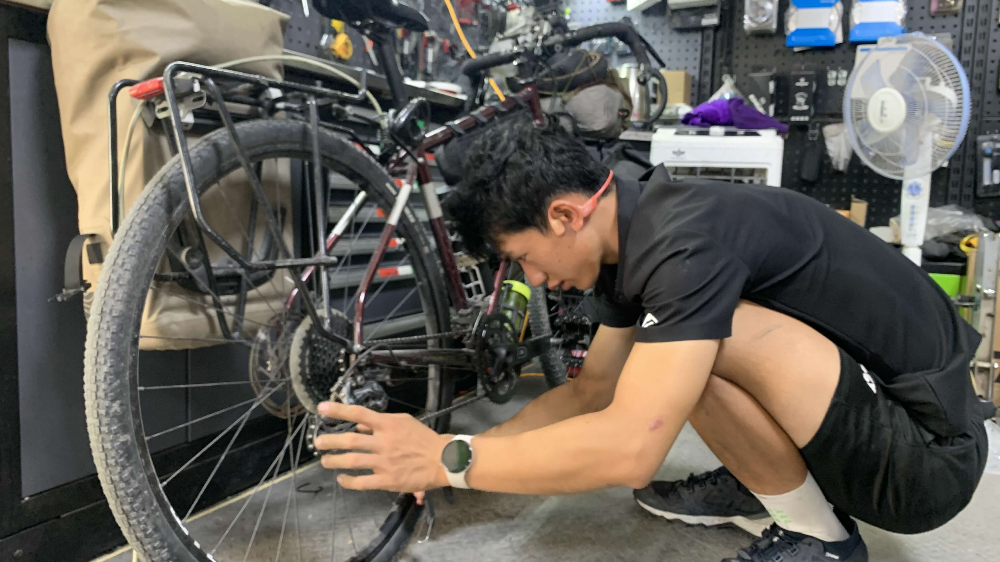
手工費20元。換完後，變速、踩踏都有點緊，也許只是還不習慣。
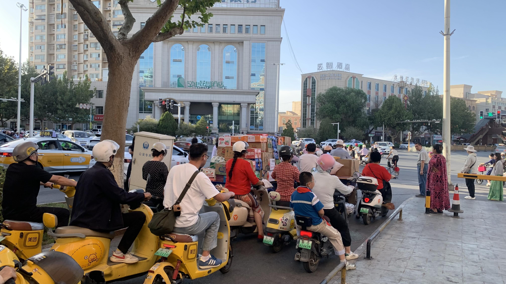
路上機車數量眾多，約半數沒戴安全帽，一路亂竄按喇叭，騎上人行道或者逆向。
直行時差點被兩名沒戴安全帽的逆向國小生撞到，他們噴過轉角後還特地繞回我身邊對我說：「你剛剛是罵我髒話嗎？」
真不好意思弟弟們，違規車輛太多，我還來不及分神咒罵你們。
看了我幾眼，前方坐在機車上、頭部幾乎與龍頭齊高的弟弟油膩地說：「沒事，以後小心騎車啊！」
想回味90年代台灣的人很適合移民到此生活。
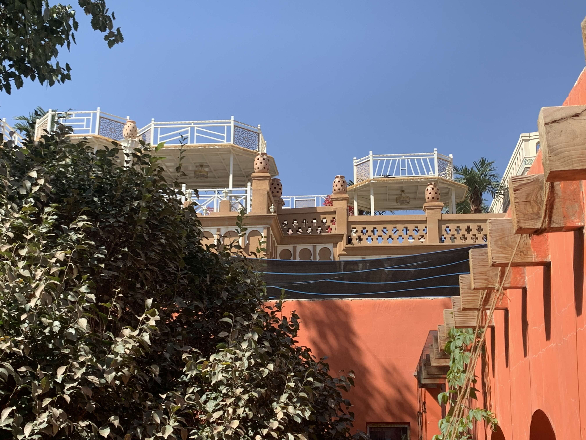
新民宿環境很不錯，雖然住客雜了一點，但廁所和房間的空調都一直開著，飲用水免費、洗衣免費，冰箱和廚房也沒上鎖。多花20元，住起來自在多了。
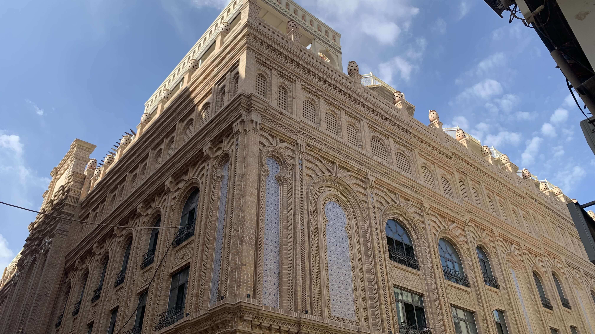
民宿位於這棟建築的巷子裡，走到大馬路上，對面就是所謂的古城區。
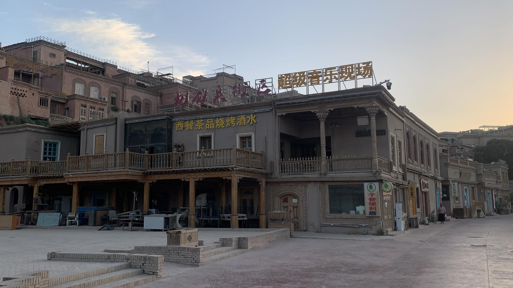
沿著外圍繞一圈，這些招牌字體的美感與其它省份何異？整個中國都必須忍受這些令人出戲的假古城真觀光景區嗎？
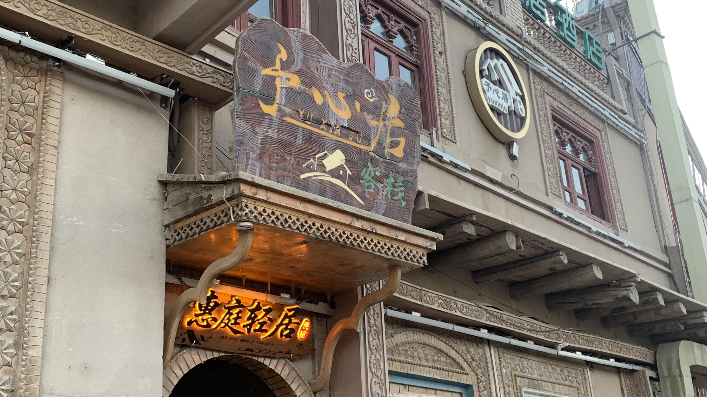
就像在地盤上撒尿一樣
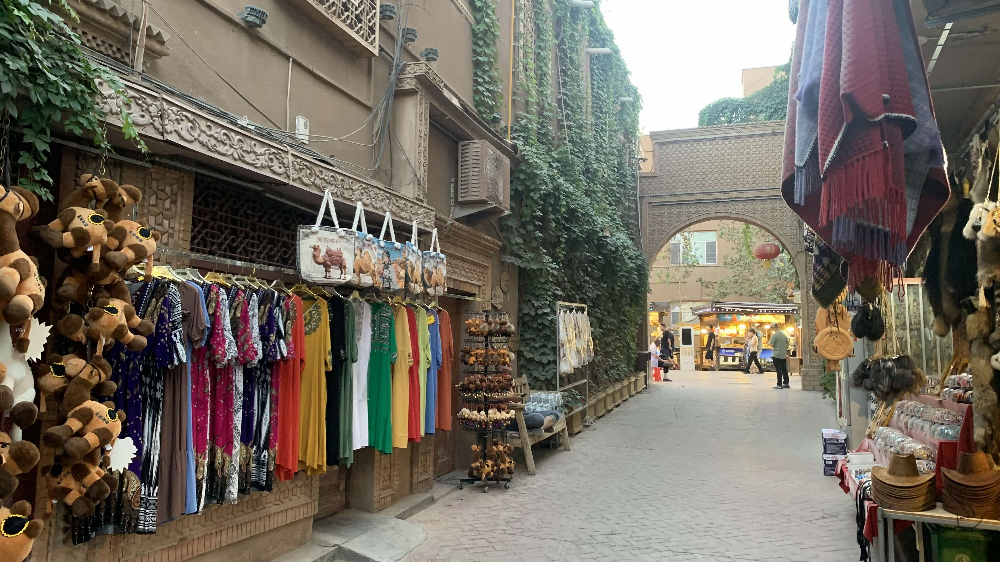
還沒看到文化，倒是迎來一排紀念品。也許是我的眼睛缺乏多元欣賞的寬容，就讓我一輩子保有如此偏狹吧。
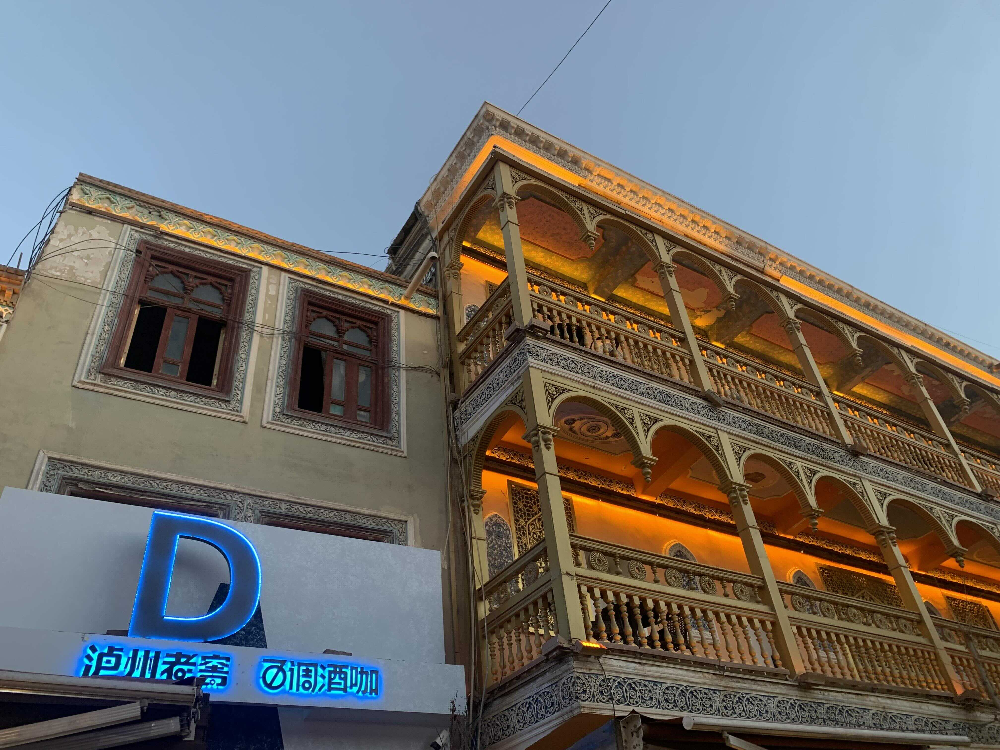
瀘州老窖？我在喀什不是嗎？
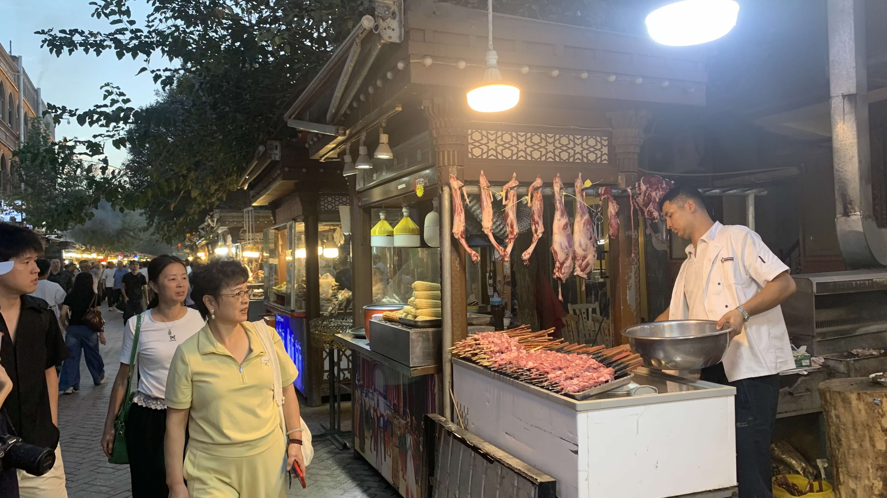
傍晚古城燈光都亮了，基本就是寧夏夜市，只不過攤位上掛的是兔子
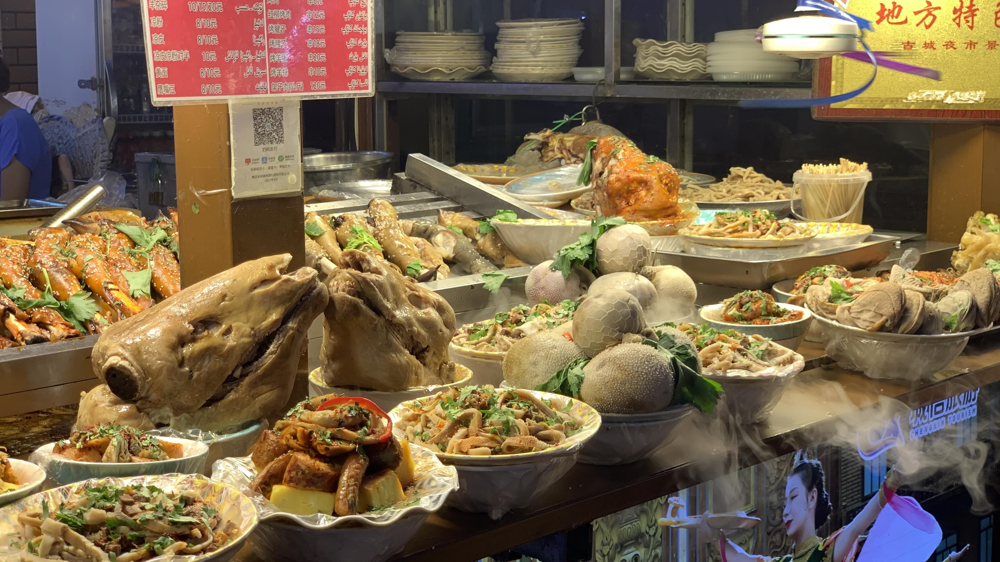
羊頭和羊內臟
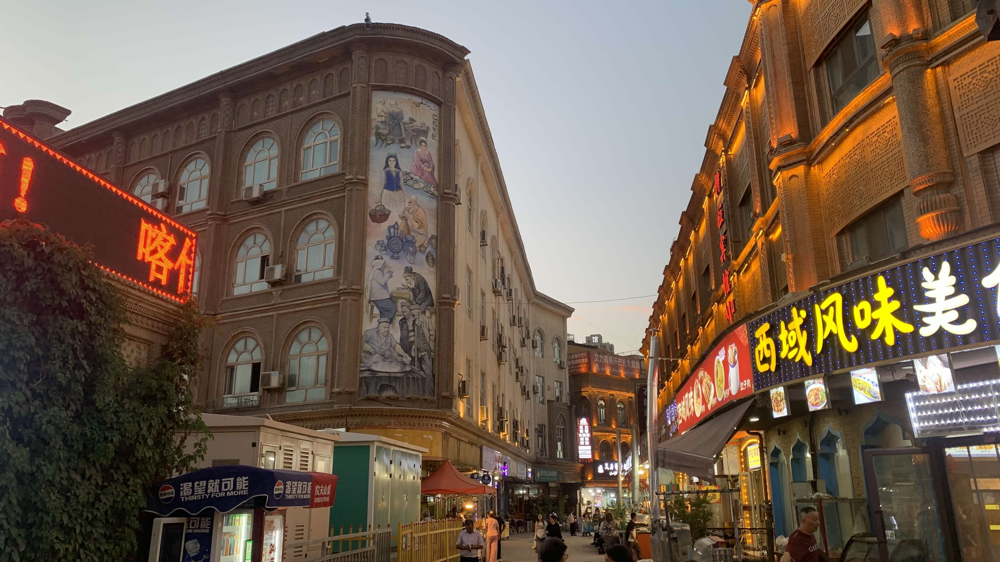
這種裝舊的感覺令人不自在，時間都還沒在牆上留下痕跡，人類就急著安上歷史價值。
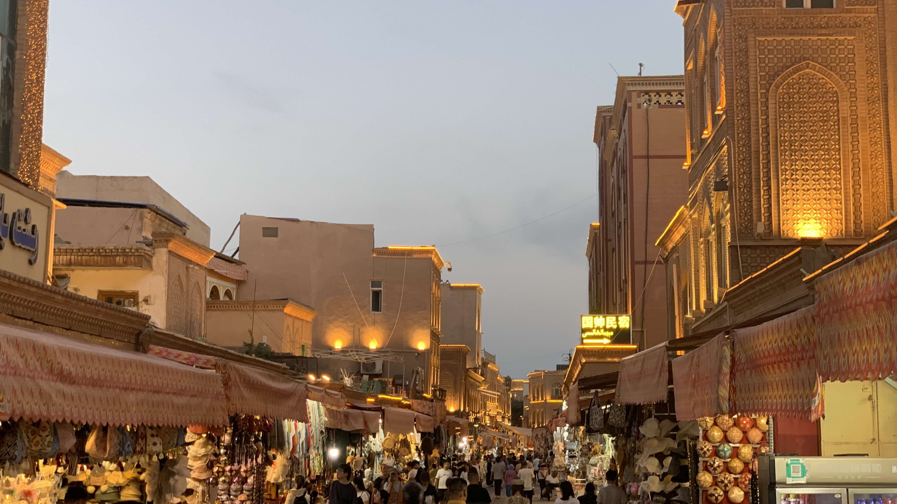
路上聽到的：「喀什比起烏魯木齊更有煙火氣息。」這句話像模板一樣，由不同的旅人傳遞給我。煙火就是這種模板樣嗎？
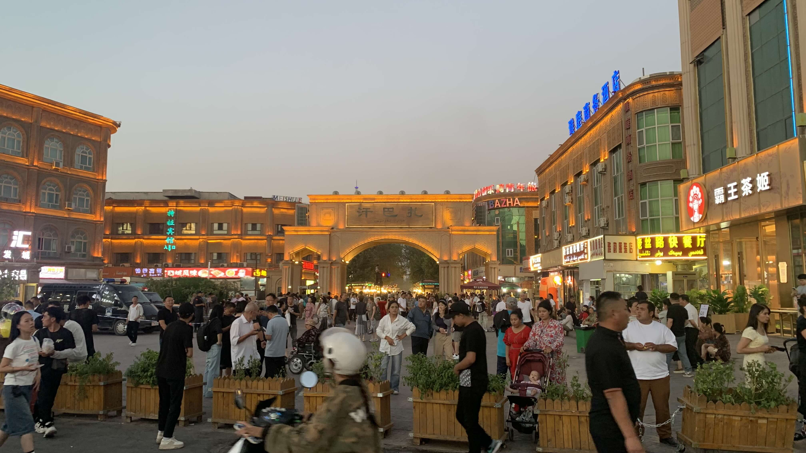
回住處查了古城歷史，目前肉眼可見大概是十幾年前翻修過的。
整體而言，古城外圍新蓋的、沒有假裝土牆，僅沿用伊斯蘭風格的磚造建築還好一些，至少形式和時間痕跡和用途都配得上。
終於收到簽證通知，明天就要往口岸前進了。安全帽後面的警示燈不知掉在哪裡，真想離開此地。
本週花費： 元